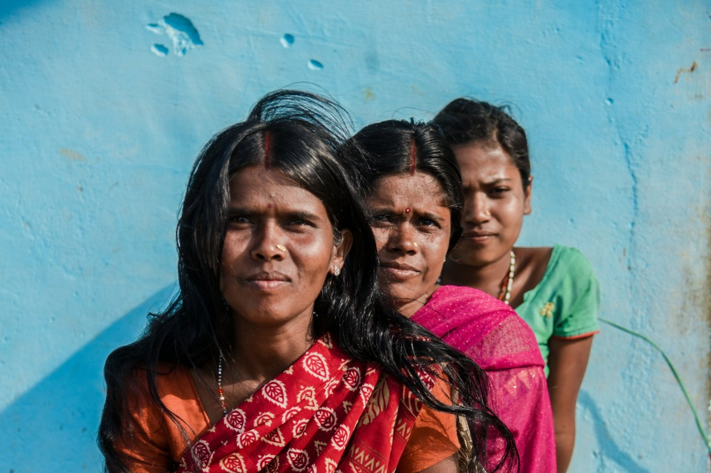
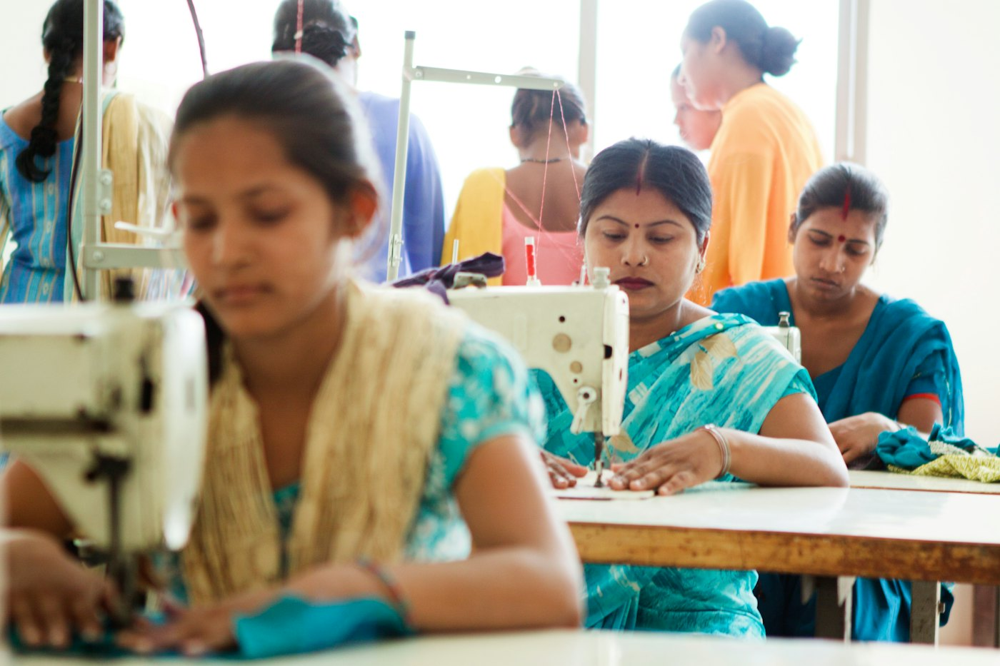
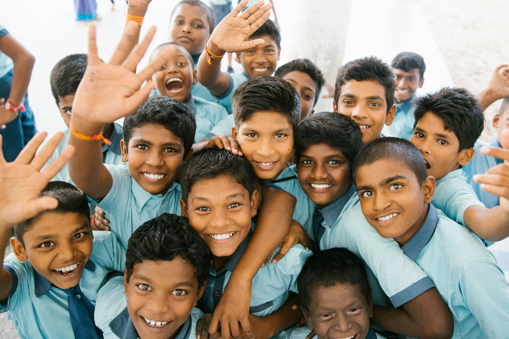
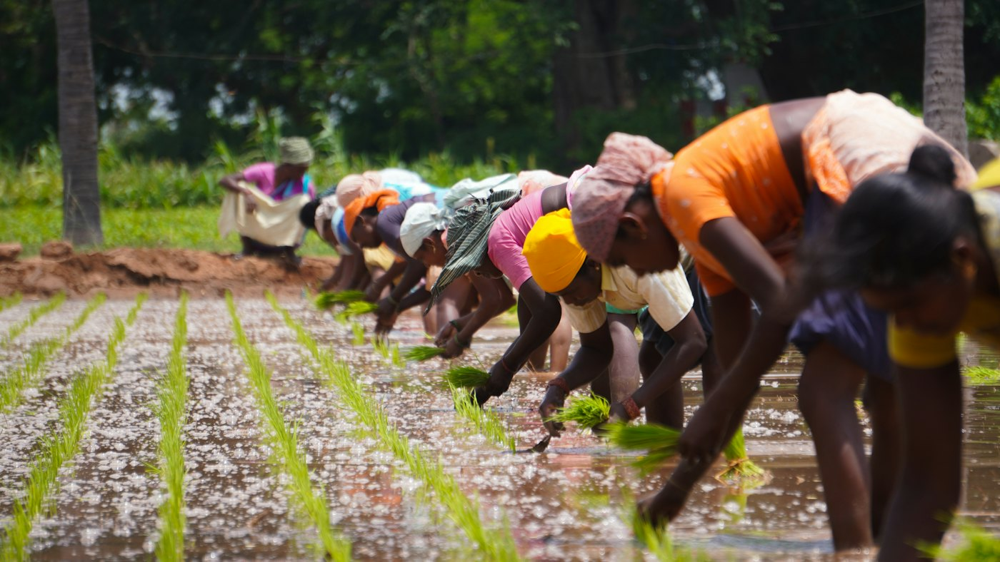

Eight Areas of Work, One Shared Purpose
Laxmi Surbhi NGO works across multiple areas of social development. Each area below is one part of a single mission: to serve, empower and uplift individuals through compassion, support and opportunities for a just, inclusive and progressive society.

Senior Citizen Care
“Respect, Dignity, Companionship.”
Our senior citizen care work is an effort dedicated to ensuring that senior citizens are not left feeling neglected, isolated, helpless or alone. We believe that growing older should never mean losing one's dignity, independence, companionship or sense of belonging.
“A Second Family for Every Senior.” — the guiding thought of this area of our work.
Objective
To reduce loneliness and isolation among senior citizens, to support their dignity and independence, and to help them access the assistance they need through a dependable community network.
Activities & Programmes
Our senior citizen care work is organised into seven tracks of support — companionship, health & wellness, well-being check-ins, social engagement, digital support, safety & awareness, and community support.
Impact
Content to be added from official documentation.
Related Projects
Senior Companionship & Friendly Visits, the Regular Well-Being Check-In Network, and Digital Support & Smartphone Assistance.
View in ProjectsSeven Tracks of Support
Designed around the needs of each individual rather than a one-size-fits-all approach:
1. Companionship
- Regular interaction and friendly visits
- Conversation and emotional support
- Listening and spending meaningful time
- Assistance in reducing loneliness and isolation
2. Health & Wellness Support
- Assistance in coordinating doctor appointments
- Health-awareness programmes
- Wellness activities
- Physiotherapy/health linkages where available
- Assistance in accessing appropriate medical services
3. Regular Well-Being Check-Ins
- Phone calls
- Welfare check-ins
- Visits by authorised volunteers
- Escalation to family/emergency contacts when necessary
4. Social & Recreational
- Celebrations & get-togethers
- Games & activities
- Cultural programmes
- Outings
- Festivals and special occasions
5. Digital Support
- Smartphone assistance
- WhatsApp & social media guidance
- Digital payments awareness
- Online appointment assistance
- Basic digital literacy
6. Safety & Awareness
- Senior citizen safety awareness
- Scam & fraud awareness
- Emergency preparedness
- Basic home-safety awareness
- Awareness regarding government & community welfare services
7. Community Support
Connecting senior citizens with a collaborative, multi-stakeholder ecosystem:
Education
“Knowledge Today. Better Tomorrow.”
This area of our work focuses on learning, educational access and educational awareness for children, students and communities.
Objective
Content to be added from official documentation.
Activities & Programmes
Content to be added from official documentation.
Impact
Content to be added from official documentation.
Related Projects
Projects for this area will be published from official documentation.

Women Empowerment
“Empowered Women. Empowered Society.”
This area of our work focuses on the support, opportunity and development of women and girls, so that families and communities grow stronger.
Objective
Content to be added from official documentation.
Activities & Programmes
Content to be added from official documentation.
Impact
Content to be added from official documentation.
Related Projects
Projects for this area will be published from official documentation.
Health & Wellness
“Healthy Lives. Stronger Communities.”
This area of our work focuses on health, wellness, awareness and community health.
Objective
Content to be added from official documentation.
Activities & Programmes
Content to be added from official documentation.
Impact
Content to be added from official documentation.
Related Projects
Projects for this area will be published from official documentation.

Skill Development
“Skills for Today. Success for Tomorrow.”
This area of our work focuses on vocational skills, training, livelihood development and capacity building.
Objective
Content to be added from official documentation.
Activities & Programmes
Content to be added from official documentation.
Impact
Content to be added from official documentation.
Related Projects
Projects for this area will be published from official documentation.

Youth Development
“Inspiring Youth. Building a Better Future.”
This area of our work focuses on youth development, learning, leadership and community participation.
Objective
Content to be added from official documentation.
Activities & Programmes
Content to be added from official documentation.
Impact
Content to be added from official documentation.
Related Projects
Projects for this area will be published from official documentation.

Environment
“Care for Nature. Care for Future.”
This area of our work focuses on environmental awareness, sustainability, plantation, conservation and care for nature.
Objective
Content to be added from official documentation.
Activities & Programmes
Content to be added from official documentation.
Impact
Content to be added from official documentation.
Related Projects
Projects for this area will be published from official documentation.

Community Awareness
“Awareness Today. Better Society Tomorrow.”
This area of our work focuses on awareness campaigns, social awareness activities, community programmes and public participation.
Objective
Content to be added from official documentation.
Activities & Programmes
Content to be added from official documentation.
Impact
Content to be added from official documentation.
Related Projects
Projects for this area will be published from official documentation.
Our Programme Model
A clear progression from first contact to lasting community participation: